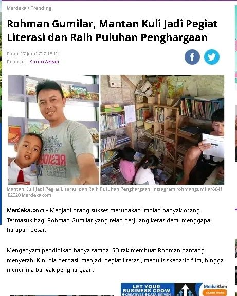
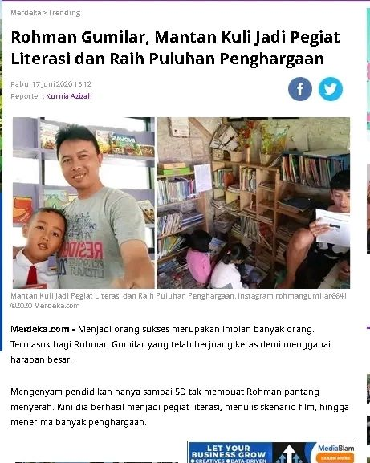

Program-Program TBM
1. KELAS MENULIS
Kelas menulis diperuntukan bagi anak-anak dan remaja yang suka menulis, kelas menulis diadakan dalam dua Minggu sekali baik yang diadakan di TBM maupun mengadakan kegiatan di sekolah-sekolah dan hasil kegiatan dapat menghasilkan sebuah buku.
2. SINERGI
Sinematografi Literasi Digital, praktik baik literasi dibidang sinematografi, seni peran dan parktik seputar pembuatan film.
3. BANK SAMPAH
Anak –anak TBM mengumpulkan Sampah yang bisa didaur ulang untuk dijadikan kerajinan atau membuat prakarya.
4. WISATA LITERASI/OUTING CLASS

Kegiatan ini mengajak pengunjung TBM terutama anak-anak untuk berkegiatan literasi diluar TBM seperti mejelajah alam, kegiatan outbond juga mengunjungi tempat-tempat bersejarah maupun melakukan kunjungan ke perpustakaan daerah, provinsi dan perpustakaan khusus atau antar TBM lainnya.
5. PEMBERDAYAAN MASYARAKAT

TBM juga bermitra dengan pihak lainnya dengan tujuan untuk membuat program pemberdayaan bagi masyarakat setempat agar mempunyai pengetahuan sesuai dengan keahlian masing-masing,
6. DONGENG KELILING
Sebulan sekali TBM Bina Kreasi Muda, berkunjung ke PAUD-PAUD yaitu berbagi keceriaan bersama melalui kegiatan mendongeng sekaligus pembinaan pojok baca yang ada di PAUD.
 
